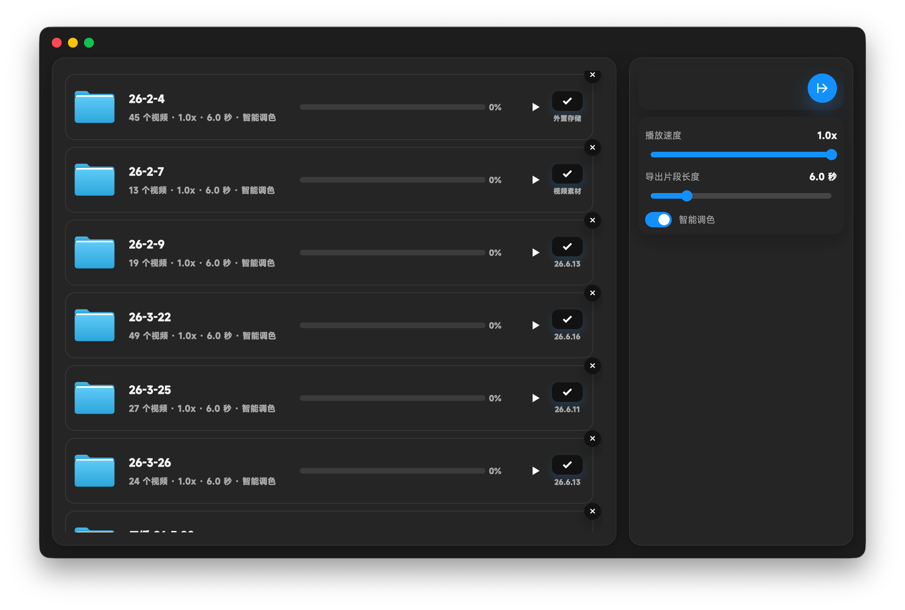

0.1.1
还没发布使用 Tauri + 裁剪版 FFmpeg，精简内核，将安装包体积下降三分之二。
开发者邮箱
mkgyaa@gmail.com 赞赏可发邮件，不赞别发，（认真的）MadFlow
光流！光流！光流！把你拍摄的素材通通拿过来光流。MadFlow 支持大批量素材处理， 用完善的批处理逻辑，让电脑在闲置时慢慢处理素材。
整体做减法：仅保留单个片段和放慢倍速两个栏位，减少设置的时间。
批量处理
每个素材都能单独选择导出文件夹、放慢倍速、片段时长和具体片段。CPU 和内存紧张时慢处理， 空闲时快处理。智能调色 beta 会顺手把素材拉向中性状态。

软件使用可视化日志，方便了解实时进展，以及 DeBug。
自动素材筛选
MadFlow 会主动检查画面是否太暗、过曝、层次太少、低饱和、画面变化太少、模糊， 以及大幅甩动和严重晃动，自动切出更值得处理的片段。
重要功能
MadFlow 会检测画面是否太暗、过曝、明暗层次太少、饱和度太低、画面变化太少、 画面太糊，以及运动是否太剧烈，比如大幅甩动和严重晃动，并给出评分。
这条素材挺能打。
更新日志
使用 Tauri + 裁剪版 FFmpeg，精简内核，将安装包体积下降三分之二。
支持批量光流、单素材独立参数、自适应批处理、智能调色 beta、可视化日志和素材评分。